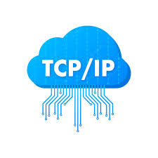

TCP/IP
TCP/IP (Transmission Control Protocol/Internet Protocol) is a foundational set of communication protocols that enables computers and devices to communicate over the internet and other interconnected networks. It consists of two main protocols: TCP, which ensures reliable and ordered delivery of data, and IP, which handles the addressing and routing of data packets across networks. TCP breaks down data into smaller packets, sends them to their destination, and then reassembles them in the correct order, ensuring data integrity. IP is responsible for assigning unique addresses to devices (IP addresses) and directing data packets to their intended recipients using routers and switches. Together, TCP/IP forms the backbone of internet communication, allowing seamless exchange of information between devices globally.
HTTPS

HTTPS (Hypertext Transfer Protocol Secure) is a protocol used for secure communication over the internet. It ensures that the data exchanged between a user's web browser and a website's server is encrypted and secure from eavesdropping,unwanted file access and tampering. This is achieved through the use of SSL/TLS (Secure Sockets Layer/Transport Layer Security) encryption, which establishes a secure and encrypted connection between the two parties. HTTPS is essential for protecting sensitive information such as login credentials, credit card numbers, and personal data, making online transactions and interactions more secure and private. It can be easily identified by a padlock icon in the browser's address bar and an "https://" prefix in the website's URL.
HTTP
HTTP (Hypertext Transfer Protocol) is the foundation of data communication on the internet. It enables web browsers to request and receive web pages from servers. It functions as a set of rules for how data is formatted, structured and transmitted, allowing users to access and interact with websites through URLs (web addresses). HTTP defines how information is exchanged between a client (like a browser) and a server, facilitating the loading of text, images, videos, and other content that make up web pages.
VOIP
VOIP (Voice over Internet Protocol), is a technology that enables the transmission of voice and multimedia content over the internet, transforming analog audio signals into digital data packets. By converting voice into digital information and breaking it into small packets, VoIP allows for real-time communication between users through the internet. This technology provides a cost-effective and flexible alternative to traditional telephone systems, offering features like voice calls, video calls, and conferencing while utilizing the existing internet infrastructure. Popular applications like Skype, WhatsApp calls, and business telephony services often utilize VOIP technology to enable voice and video communication over the internet. VoIP has revolutionized communication by enabling seamless, efficient, and versatile voice and multimedia exchanges across the globe.